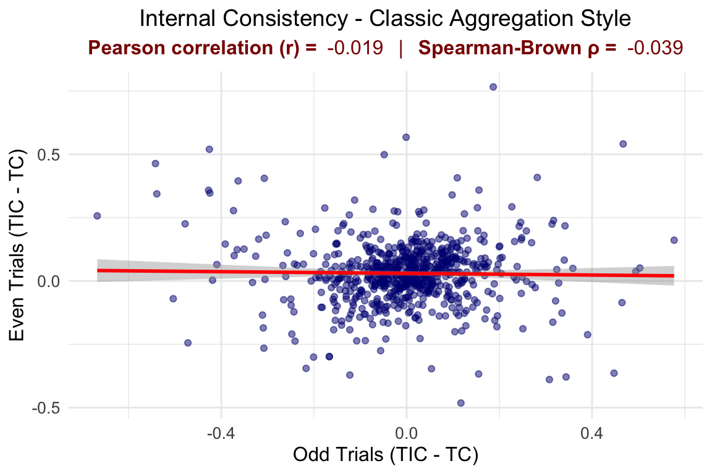
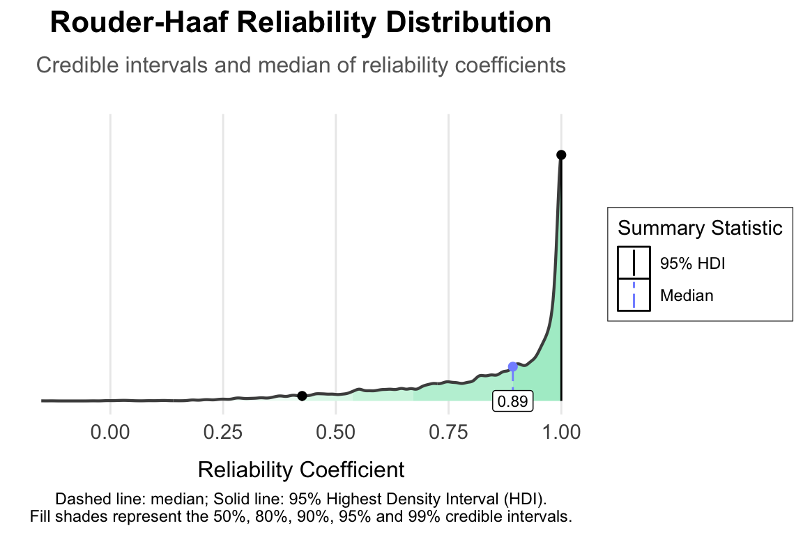
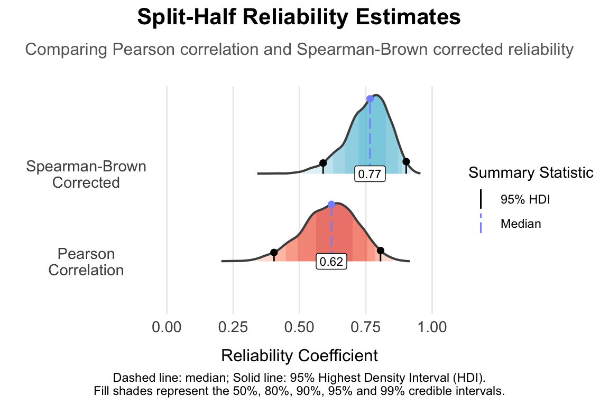
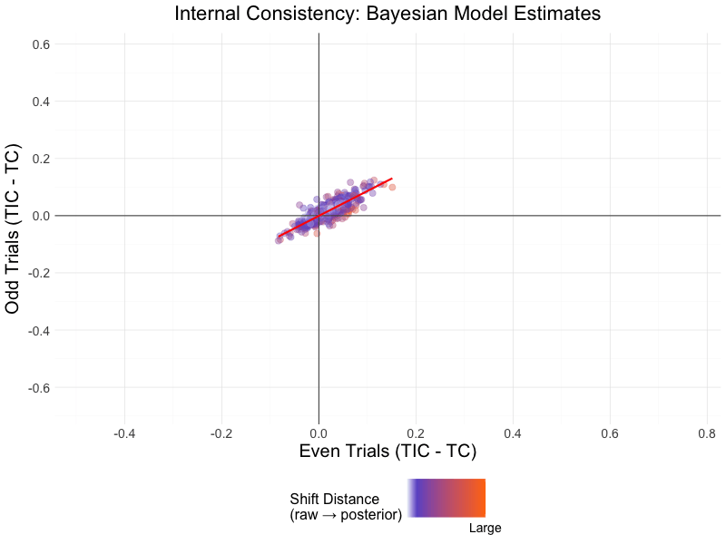

library(tidyverse)
`%ni%` <- Negate(`%in%`)
Study_1 <- readr::read_csv("openData_study1_trials_102823.csv")
s1.all.outcomes <- readr::read_csv("openData_study1_outcomes_102823.csv")
# Exclude participants with <60% accuracy or median RT <300 ms
s1.excluded.id <- s1.all.outcomes %>%
filter(all_accuracy < 0.6 | all_medRTc < 300) %>%
pull(id)
Study1_fs <- Study_1 %>%
filter(id %ni% s1.excluded.id,
condition != "practice",
resp_type != "timeout") %>%
filter(test_id %in% c(1:3, 19:21),
resp_type == "mouse") %>%
mutate(
RT = as.numeric(rt) / 1000, # Convert RT to seconds
accuracy = as.numeric(correct),
trial.all.type = row_number(),
split = as.factor(ifelse(trial.all.type %% 2 == 1, 1, 2)),
condition = case_when(
condition == 1 ~ "TC",
condition == 2 ~ "TIC",
condition == 3 ~ "TT",
condition == 4 ~ "NN"
)
) %>%
filter(RT > 0.25, RT < 3.5, accuracy == 1, condition %in% c("TC", "TIC")) %>%
group_by(id, condition) %>%
mutate(Outlier = c(datawizard::standardize(RT, robust = TRUE))) %>%
ungroup() %>%
filter(abs(Outlier) < 3.29)Why Are We Here?
Goal: Discuss two methods to detect reliability (of cognitive tasks in this case) using Bayesian hierarchical linear models (HLMs) in
brms.Case Study: The Dot-Probe Task. Contrary to a recent publication that claims the emotional dot-probe task is not a reliable measure, I’ll show that more nuanced modeling suggests the task is probably “fine” reliability-wise.
The Bottom Line: This tutorial-like post demonstrates how Bayesian HLM can fundamentally change reliability assessment. By analyzing trial-level data rather than aggregated scores, these methods can uncover meaningful signal where traditional approaches see only noise—potentially rehabilitating numerous tasks previously deemed psychometrically inadequate.
I make assumptions (too)!
I assume you:
are vaguely familiar with hierarchical linear models (HLM) and Bayesian statistics 1.
know basic concepts in psychometrics - mainly the idea of “reliability”.
This post uses R with a tidyverse approach. My goal is to show how others’ great theoretical works can be applied in brms. If you’re already a fan, welcome. If not, get ready to fall in love!
A Blessing and a Curse - the “Reliability Paradox”
Scientists love finding significant results. Cognitive psychologists, in particular, aim to build “robust tasks”—ones that consistently produce similar significant effects when averaged across participants. When participants perform more similarly (showing less between-subject variance), effects tend to be more stable and therefore significant, leading to happy researchers. But here’s the ironic twist: to get that consistent effect, tasks often get designed or refined until nearly all participants show the same pattern. In other words, cognitive psychologists (perhaps inadvertently) end up with tasks that minimize individual differences.
This is a thorny situation that reveals itself when researchers try to correlate their robust tasks performance with other measures of individual differences like questionnaires, or performance on other tasks. That’s when they discover there simply isn’t enough variability between participants to work with and to differentiate between their subjects.
The complexity worsens when the sought-after effect is a difference between two conditions of the same task (i.e., a within-subject condition). Take, for instance, when we measure attentional bias by comparing how quickly people respond to a probe that appears behind threatening versus neutral images—in this case researchers subtract one reaction time (RT; the score from the threatening stimuli) from another (the score from the neutral stimuli) in what’s known as the dot-probe task. This introduces the “reliability of difference scores” problem into play—a well-documented challenge in measuring and understanding change. For both theoretical and statistical reasons, subtracting two within-subjects conditions produces individual difference scores with poor psychometric properties. These scores typically show weak correlations with themselves both when taken across time points (i.e., low test-retest reliability) and within a single administration (i.e., low internal reliability). And here is where the thorn hits again, because if these measures can’t correlate with themselves, how (in the hell) can they correlate with anything else?
This tension between “robust tasks” (good for group-level effects) and high reliability (good for individual differences) is the heart of the so-called “reliability paradox,” as popularized by Hedge et al. and Draheim et al.. These well-rounded and accessible papers explore this paradox in depth, making further elaboration here unnecessary. The key insight here is that, there is an inherent pitfall in the meeting point of the endeavor after robust tasks, difference scores and individual differences.
On repelling the reliability curse
There are generally two approaches to addressing the reliability paradox:
Better task design – creating more challenging tasks or developing multiple ways to tap into the construct of interest, thereby generating more within-subjects variation. This direction has already yielded promising results (for example).
Nuanced Statistical modeling - analyzing trial-by-trial data with a model (often Bayesian HLM) that explicitly teases out and retains individual differences.
On Bayesian Hierarchical Models
I won’t re-argue the entire case for Bayesian HLMs here (see footnote 1, these great materials, and don’t miss Nathaniel Haines blog). Suffice it to say that:
Trial-Level modeling: Bayesian HLMs are generative models that we will feed trial-by-trial data. This means our models produce informed distributions for each participant in each condition. By considering trial-by-trial variation through this model-informed approach, we get nuanced measures of individual performance—precious information that would be lost in traditional ANOVA-style aggregation.
Distributional Flexibility: Traditional linear models or ANOVAs assume our measures ultimately follow a Gaussian distribution. With Bayesian HLMs, we can choose distributions that actually match our data. Take RTs, for instance—they’re right-skewed and always positive. We can model this reality using a lognormal distribution (more on this later), allowing individual distributions to follow suit. This capability is particularly valuable for individual differences research.
Posterior Distribution: the Bayesian philosophy itself offers a distinct advantage. Instead of getting a single reliability value, we get posterior distributions—entire spectrums of possible values. This provides a richer, more nuanced perspective on reliability in our data.
The Case Study: Revisiting the Dot-Probe Task
Xu et al. (2024) have recently provided a compelling case study. They set out to test whether the “emotional dot‐probe task”—a long-standing paradigm in cognitive psychology—can truly capture an attentional bias to threat with any consistency. In a typical trial of the dot-probe task, two images (one threatening, one neutral) are flashed on opposite sides of the screen. After a brief interval, these images disappear and a target (often a letter like “E” or “F”) appears in the location of one of the images. The idea is that if you’re quicker to respond when the target replaces the threat, you’ve got a bias toward threat. Xu et al. took this classic design further by testing 36 variations of the task—tweaking everything from stimulus type (faces, scenes, snakes/spiders) to stimulus orientation (horizontal vs. vertical) and the timing of the stimulus onset asynchronies (SOAs; 100, 500, or 900 ms). Their stark finding: almost all variations of the task produced internal reliability estimates that were essentially zero, suggesting that this task holds little promise for detecting individual differences.
In this post, I reanalyze a subset of Xu et al.’s data with Bayesian HLM, hypothesizing that a more sophisticated approach might rescue some of that lost individual variance.
Pre-processing the Data
I took the large datasets from Xu et al. and made several key decisions:
Focusing on Study 1: This study closely examined the reliability of the emotional dot‐probe task, making it ideal for reanalysis.
Selecting Task Variants: To ensure a substantial sample size, I combined data from six variants of the task (out of the 36 tested in the paper). All used faces as threatening stimuli on vertical display, differing in their SOAs and whether additional neutral trials were included. Only threat-congruent (TC) and threat-incongruent (TIC) trials were analyzed.
Data Cleaning and Filtering: Building on Xu et al.’s exclusion criteria—participants with less than 60% accuracy or median RTs under 300 ms—I added a few more:
Included only mouse responses to reduce device-related variability.
Retained only correct response.
Excluded responses faster than 250 ms (likely anticipatory) and slower than 3500 ms (potential distractions).
Outliers control: I removed trials where RTs deviated more than 3.29 median absolute deviations from the median per subject and condition.
These are quite conservative steps. While many may not be strictly necessary for individual differences studies, they are standard in classic cognitive task analyses. Our total sample size now is 698 participants (!).
Here is the R code for the preprocessing:
The Rouder-Haaf Model
In their fantastic paper, Rouder and Haaf (2019) propose a Bayesian HLM that resembles a factorial ANOVA—but with a twist that lets us directly extract a reliability coefficient. For a split-half scenario (odd vs. even trials), the model is:
RT ~ split * condition + (split * condition | subject)Which can also be written as:
RT ~ split + condition + split:condition +
(split + condition + split:condition | subject)The fixed‐effects part captures overall group trends, while the random‐effects part allows individual participants to deviate from these patterns. This setup is particularly handy for evaluating how each person’s condition effect (threat‐congruent minus threat‐incongruent) remains stable or fluctuates across splits (e.g., odd vs even trials, or different sessions).
Rouder and Haaf conceptualize reliability as a proportion of variance – essentially asking: How much of the condition effect is preserved after we remove the fluctuations due to the split (or time) effect, relative to the total variability? In their framework:
\(\sigma_{\omega}^{2}\) is the variance of the random slope for
condition|subject, reflecting the stable, overall individual differences in the condition effect.\(\sigma_{\gamma}^{2}\) is the variance of the random slope for
split:condition|subject, capturing how much that condition effect fluctuates from one split (or session) to the next.
They then define reliability as:
\[ \rho = \frac{\sigma_{\omega}^{2} - \sigma_{\gamma}^{2}}{\sigma_{\omega}^{2} + \sigma_{\gamma}^{2}}. \]
In plain language, the total variance in the condition effect can be thought of as arising from two sources: the consistent part (\(\sigma_{\omega}^{2}\)) represents the enduring condition effect, while the fluctuating part (\(\sigma_{\gamma}^{2}\)) indicates how much that effect varies over time. The reliability estimate (\(\rho\)) is essentially the fraction of the overall condition effect that remains stable after removing the variability due to time. In other words, if most of the variance is consistent, reliability is high; if a large portion is unstable, reliability is low.
Rouder-Haaf Model in brms
Now that we understand the conceptual framework, let’s see how to implement this in brms. The model specification needs to be careful and precise - we’re dealing with reaction time data that has specific characteristics, and we want to capture best the nature of our measurements:
library(brms)
library(bayestestR)
options(contrasts = c("contr.equalprior", "contr.poly"))
priors <- c(
prior(exponential(1), class = "sd", group = "id"),
prior(exponential(1), class = "sd", group = "id", dpar = "sigma"),
prior(normal(0, 1), class = "b", dpar = "sigma"),
# Fixed effects
prior(normal(0, 0.1), class = "b"))We start by loading the necessary packages and setting proper sum to zero contrast coding. The contr.equalprior ensures unbiased Bayesian estimation when working with factors - unlike traditional effect or treatment coding which can lead to biased priors (see here for a detailed explanation).
Next, we define relatively weakly informative priors for all parameters. The random-effects standard deviations (for both the mean and the residual variance) receive exponential(1), reflecting mild assumptions about individual variability. Meanwhile, the fixed effects for the mean RT are assigned a normal(0, 0.1) prior, implying modest expected effect sizes. Finally, we allow for some uncertainty in the residual standard deviation by placing a normal(0, 1) prior on any parameters governing sigma. These choices are conservative enough to encourage stable estimation, yet flexible enough to capture meaningful individual differences in response times.
DotProbeModel.RouderHaafModel.RDS <- brm(
formula = bf(
RT | trunc(lb = 0.25, ub = 3.5) ~
condition * split +
(condition * split|p|id),
sigma ~
condition * split +
(condition * split|p|id)
),
prior = priors,
family = lognormal(), data = Study1_fs,
iter = 4000, warmup = 2000,
chains = 4, cores = 4,
threads = threading(2),
control = list(adapt_delta = 0.95,
max_treedepth=12),
init = 0, backend = "cmdstanr")The model formula contains several important features:
Truncation:
trunc(lb = 0.25, ub = 3.5)tells the model our response variable (RT) cannot fall below 0.25 seconds or exceed 3.5 seconds. This matches our preprocessing decisions and helps the model make more accurate predictions by respecting the actual bounds of our data.Distribution Choice:
family = lognormal()is crucial. Reaction times follow a characteristic right-skewed distribution—they can’t be negative, tend to have a longer right tail, and the variability often increases with the mean. Importantly, the lognormal distribution captures these properties naturally by modeling RTs on the log scale, where effects are multiplicative (e.g., a 10% slowdown instead of ±X ms).This multiplicative framework elegantly handles proportional relationships (e.g., a participant slowing by 10% in threat trials retains the same effect size whether their baseline is 500 ms or 1000 ms). In the same vein, reliability estimates derived from the log scale reflect proportional differences. Nevertheless, it is mostly common to report and use absolute differences in raw milliseconds. Later, we’ll reconcile this by converting our reliability estimates to the raw RT scale using posterior predictions—ensuring consistency with Xu et al.’s approach and broader psychometric conventions.
The Sigma: The
sigma ~ condition * split + (condition * split | p | id)part of the formula recognizes that people aren’t just different in their overall consistency, but that their variability can also differ by condition and split. Imagine some participants who remain steady across all conditions, while others might fluctuate more in one condition than another. By letting each participant have their own “baseline consistency” as well as condition- and split-specific effects, we are not just acknowledging that people vary overall—we’re allowing these differences to manifest across different experimental factors, rather than forcing everyone into a single error structure.The lognormal distribution already accounts for the fact that reaction times naturally “spread out” as they lengthen (e.g., a 3-second average often has bigger ups/downs than a 1-second average). Here, we go a step further: each person can have a distinct sigma profile for each combination of condition and split—capturing a richer picture of individual differences.
Correlated Individual Effects: The
|p|syntax in both the main formula(condition * split |p|id)and the sigma formula(condition * split |p|id)allows the model to account for an important reality of reaction time data: participants with longer RTs typically also show larger variability in their responses. Instead of assuming independent effects, this structure lets the model estimate correlations between individual differences in mean RTs and response variability. By doing so, it refines individual estimates even further.
Extracting the reliability
Just before examining the reliability using a full Bayesian approach à la “Rouder and Haaf”, let’s look at what we get using the classic method for calculating internal consistency.

The results mirror those reported by Xu et al., showing a nearly zero correlation of -0.019 (and similarly poor results after applying the Spearman-Brown correction) – in fact, slightly negative in this case.
Now for the main course: Rouder and Haaf reliability estimate. Using tidybayes, I extract the standard deviations of the random effects for both the congruity effect and the interaction and transforming them to the response scale.
Var.df <- DotProbeModel1 %>%
spread_rvars(sd_id__trial_type1, `sd_id__trial_type1:half.all.type1`)
Var.df <- Var.df %>%
mutate(
sd_response_condition1_response = exp(sd_id__condition1^2 / 2) * sqrt(exp(sd_id__condition1^2) - 1),
sd_response_interaction_response = exp(`sd_id__condition1:split1`^2 / 2) * sqrt(exp(`sd_id__condition1:split1`^2) - 1)
)I square the standard deviations in order to get variance,
Var.df_variance <- Var.df %>%
mutate(across(everything(), ~ .^2)) and then what I have left is to perform the subtraction and division (the rvars structure makes this remarkably straightforward):
Rouder.Haaf.numerator <-
Var.df_variance$sd_id__trial_type1 -
Var.df_variance$`sd_id__trial_type1:half.all.type1`
Rouder.Haaf.denominator <-
Var.df_variance$sd_id__trial_type1 +
Var.df_variance$`sd_id__trial_type1:half.all.type1`
Rouder.Haaf.Reliability <- Rouder.Haaf.numerator/Rouder.Haaf.denominator
This is the posterior reliability coefficient distribution—a distribution of possible values for the reliability coefficient we are estimating, where the density reflects how likely each value is.
What emerges here, is in my opinion, a fascinating picture of informative Bayesian complexity:
First, we see the remarkable benefits of the Bayesian HLM approach, where 99.96% of the possible reliability values exceed the raw-aggregated value of -0.019. This dramatic difference highlights how traditional aggregation methods might severely underestimate the task’s reliability.
At the same time, the actual reliability of the Dot-probe task isn’t definitively established. The 95% credible interval suggests reliability values range from 0.43 to a practically perfect 1. While this wide posterior distribution indicates considerable uncertainty about the task’s reliability, it also allows us to make informed probability statements about specific thresholds. Based on the posterior distribution, there’s a 85.72% chance that the Dot-probe task reliability exceeds 0.6, a 77.65% chance it exceeds 0.7, and a 65.79% chance it exceeds 0.8. Such nuanced probabilistic conclusions aren’t possible with classic models and give researchers the tools to make reasoned decisions.
But what’s the most likely reliability? The Maximum A Posteriori probability estimate (MAP) point estimates follows for the most likely value and in this case indicates on practically perfect reliability of 0.998. More conservative estimates include the median at 0.892 and the mean at 0.823. All these point estimates suggest the task is substantially more reliable than previously thought, with even the most conservative estimate showing strong reliability.
Reminder: our example deals with “split-half” reliability, a type of “internal consistency”. It typically exceeds what you’d get with, for example, a test–retest scenario (different sessions, potential fatigue effects, etc.), so you might consider the values here as an upper bound on broader “reliability”.
The Chen et al. Model
Chen et al. propose a complementary approach, and focusing on the within-subject trial-level variance. In doing so, they show that ignoring this cross‐trial variance (sometimes referred to as \(\sigma_0\)) can lead to systematically underestimated reliability, especially for difference scores.
Why Model Cross‐Trial Variance?
In many classic cognitive tasks (the dot‐probe included), we observe two major sources of variability:
- Between‐subject: Some participants consistently differ in how they respond to threat vs neutral stimuli by having larger or smaller effects.
- Within‐subject: Each participant’s reaction times naturally fluctuate across trials.
The conventional aggregating approach assume this “within-subject” variance is constant across subject, and by doing so lumps all of a subject’s trials for each condition into a single average, losing any sense of how variable the trials are. Chen et al. call this out as a missed opportunity: \(\sigma_0\) is substantial, and a simple average can mask real individual differences, causing reliability measures to drop. In fact, they show that if cross‐trial variance is large relative to cross‐subject variance, a condition‐level analysis can severely underestimate reliability. Bayesian HLM with trial-level data can account for this variance. This provides more precise reliability estimates by incorporating and correctly partitioning that within‐subject trial‐to‐trial noise, rather than discarding it.
Implementing Chen et al. in brms
Chen et al. take a distinct modeling approach by focusing on how condition effects (TC vs. TIC) vary across splits (odd vs. even trials). Their model omits both the global intercept and main effect of condition, instead modeling how these condition differences manifest through interactions with splits. This parameterization directly captures how stable individual differences in condition effects are across different portions of the task. Here’s how we implement this approach in brms. Rather than using a standard factorial structure (condition + split + condition:split), we separate the random effects into distinct components for splits and condition-by-split interactions:
DotProbeModel.ChenModel <- brm(
formula = bf(
RT | trunc(lb = 0.25, ub = 3.5) ~ 0 +
split+
condition:split+
(0+split|p|id)+
(0+split:condition|p|id),
sigma ~ 0 +
split+
condition:split+
(0+split|p|id)+
(0+split:condition|p|id)
),
prior = priors,
family = lognormal(), data = Study1_fs,
iter = 4000, warmup = 2000,
chains = 4, cores = 4,
threads = threading(2),
control = list(adapt_delta = 0.95,
max_treedepth=12),
init = 0, backend = "cmdstanr")Extracting the Reliability
The Chen et al. approach gives us a reliability estimate by correlating threat bias scores (TIC-TC) between splits. The process mirrors what we typically do in reliability analysis: we compute difference scores for each split level (odd vs even trials) and correlate them, but with an important Bayesian twist - we do this for every posterior draw from our model, giving us a full distribution of reliability estimates instead of just one number. I built on their approach by adding the Spearman-Brown correction - a standard adjustment in psychometrics that accounts for split-half calculations. We need this correction because we’re essentially working with half the data in each split, and it makes our estimates more comparable to full-test reliability. Plus, since Xu et al. used this correction in their original analysis, it lets us make direct comparisons.
# Simulate expected RTs (milliseconds) for all splits/conditions
newdata <- tidyr::expand_grid(
id = unique(Study1_fs$id),
split = c("1", "2"),
condition = c("TIC", "TC")
)
pred <- add_epred_rvars(
DotProbeModel.ChenModel,
newdata = newdata,
re_formula = NULL
) %>%
mutate(condition = interaction(split, condition, sep = "_"))
# Compute threat bias (TIC - TC) for each split
diff_scores <- pred %>%
select(id, condition, .epred) %>%
pivot_wider(names_from = condition, values_from = .epred) %>%
mutate(
Effect_1 = `1_TIC` - `1_TC`, # Split 1 effect (ms)
Effect_2 = `2_TIC` - `2_TC` # Split 2 effect (ms)
)
# Calculate reliability per posterior draw
cor_results <-
data.frame(
correlation =
with(diff_scores, {
rdo(
cor(Effect_1, Effect_2)
)})) %>%
mutate(
spearman_brown = (2 * correlation) / (1 + correlation)
)
The posterior distributions reveal 95% credible intervals ranging from 0.41 to 0.81 for the raw correlation, and from 0.59 to 0.91 for the Spearman-Brown corrected reliability, with median estimates of 0.62 and 0.77, respectively. These values suggest moderate to strong reliability, though somewhat lower than the Rouder-Haaf estimates. This difference is instructive – while both approaches support the task’s reliability, they do so through different lenses. The Chen et al. method provides more conservative estimates that may feel more familiar to researchers used to traditional reliability metrics, while still demonstrating substantially higher reliability than previously reported using simpler methods.
What has changed?
In the first plot here, I presented raw, non-modeled data showing a near-zero correlation—a bleak outlook for the dot-probe task. But as we wrap up this journey, let’s visualize the shift. The Bayesian models reveal a striking twist: what seemed like irredeemable noise in the aggregated scores transforms into a meaningful signal when analyzed trial-by-trial.

The animation’s gradient (blue → red) maps this shift: cooler hues reflect stable participants, where raw scores align closely with model-adjusted estimates, suggesting reliable data. Redder points, however, mark noisy individuals—here, the model significantly adjusts their scores, pulling them toward group-level patterns. This divergence highlights why trial-level modeling succeeds where aggregation fails: by accounting for variability within each participant’s trials, the model separates fleeting noise (e.g., momentary lapses) from stable bias scores, transforming a scattered cloud into a coherent signal.
Summary
This analysis reveals how sophisticated statistical modeling can uncover reliability where simpler methods suggest none exists. Using two complementary Bayesian hierarchical approaches – the Rouder-Haaf variance decomposition and the Chen et al. correlation-based method – we find that the dot-probe task demonstrates moderate to strong reliability when analyzed appropriately, though with considerable uncertainty in these estimates.
Three key questions naturally emerge:
Which method is better?
I don’t know, a good simulation study comparing these methods will have to answer that. From a practical side, both approaches have distinct merits: Rouder-Haaf builds on the common maximal random structure that cognitive researchers are familiar with, allowing extraction of both group (that is, ANOVA-like analyses) and reliable individual differences insights from a single model. Chen et al.’s approach provides the familiar framework of difference scores and Pearson correlations (which can be corrected). At this point, the choice may ultimately depend on specific research needs.
If the task effects are reliable indeed (at least “probably fine”), could one use its raw difference scores?
Unfortunately, no. While we’ve shown the task can be reliable, this reliability is tied specifically to our modeling approach. Remember - reliability is a property of the scores we calculate, not just the task itself. So if we find reliability using these models, we need to stick with model-based scores.
What’s next for measurement?
Earlier, I presented two paths for addressing the reliability paradox: redesigning tasks or using sophisticated statistics. The results here suggest these approaches might be complementary rather than alternative solutions, an iterative process if you will. Indeed, while our models reveal meaningful reliability, the wide credible intervals suggest room for improvement. Combining better measurement practices (like adequate trial numbers) with sophisticated modeling could help us better separate true individual differences from trial-level noise. Put simply, the dot-probe task appears fundamentally sound - it might just need more trials to reach its full potential.
Footnotes
If you’re wondering how to familiarize yourself with this material, I recommend starting with the excellent book “A Student’s Guide to Bayesian Statistics” by Ben Lambert, which offers a fantastic introduction, especially for those with some understanding of frequentist statistics. Now, I’m a spiral learner—I often need to revisit concepts from different perspectives. With that in mind, I suggest following up with “Statistical Rethinking” and/or “Doing Bayesian Data Analysis”, alongside the legendary bookdowns by Solomon Kurz — As the title of the callout probably reveals, I am a fan of his writings.↩︎